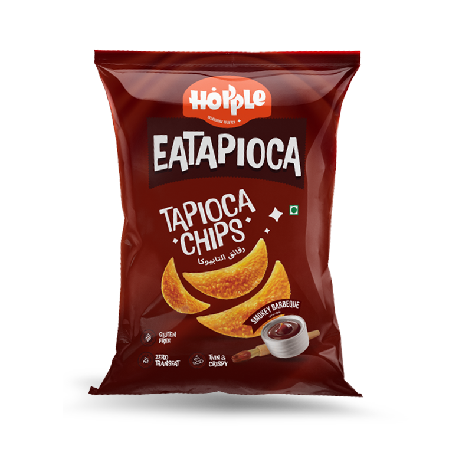

Hopple
Eatapioca
Smokey Barbeque Chips
Status
GLUTEN FREE
Quality
EXPORT GRADE
Features
THIN & CRISPY
Diet
ZERO TRANSFAT
FoodPrint Integrity Score
895/900
Flavor Profile
Taste Notes
Bold smokey essence with savory barbeque undertones. Sweet, tangy, and slightly spicy finish.
Texture
Ultra-thin wafer cut with perfect crunch. Light, crispy, and non-greasy finish.
Customer Reviews
Priya S.
"Best barbeque chips I've ever had! Guilt-free snacking at its finest."
Arjun M.
"Addictive smokey flavor! Perfect with evening tea. Kids love them too!"
Production Journey Ledger (Click to expand details)


Nutritional Information Per 100g
| Nutrient | Amount | Daily Value % |
|---|---|---|
| Energy | 518 kcal | 26% |
| Total Fat | 24.5 g | 37% |
| Saturated Fat | 11.2 g | 56% |
| Trans Fat | 0 g | 0% |
| Carbohydrates | 68.3 g | 23% |
| Dietary Fiber | 2.8 g | 11% |
| Protein | 1.4 g | 3% |
| Sodium | 420 mg | 18% |
*Percent Daily Values are based on a 2000 calorie diet
Health Benefits
Gluten-Free | Zero Trans Fat | Natural Ingredients | Low Glycemic Index | Made from Tapioca
Quality Promise
Export Quality Standards | FSSAI Certified | No MSG | No Artificial Colors
Find Hopple Near You
Available at premium retail stores & online platforms nationwide
Reliance Fresh
Big Bazaar
Amazon
Flipkart
BigBasket